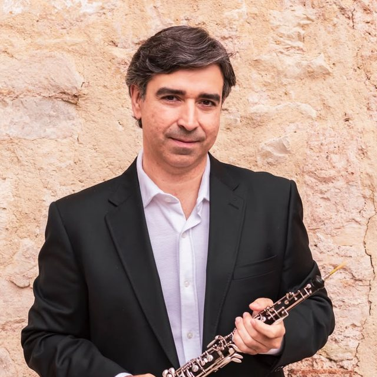

Jacobo Díaz Giráldez
Vocal de la ADCSOboe
Formación académica
Se inició en el oboe con músicos de la Banda Municipal de Sevilla y continuó en el Conservatorio Superior de Música «Manuel Castillo» de Sevilla, con Premio Fin de Grado Medio y Mención de Honor Fin de Carrera, obteniendo el Título de Profesor Superior de Oboe con Carlos Baena.
Se perfeccionó en la Academia de Música Contemporánea de Alcalá de Henares, en el Estudio Orquestal Barenboim-Said y con Thomas Indermühle.
Carrera como intérprete
Es solista de la Orquesta Bética de Sevilla y, de 2008 a 2013, fue co-solista en la Orquesta Sinfónica de Navarra, en escenarios como el Teatro de los Campos Elíseos (París), el Auditorio Baluarte (Pamplona) y el Auditorio de Galicia. Fue solista en la Joven Orquesta Nacional de España y en la de Andalucía, en el Festival de Música Contemporánea de Alicante y Santander, el Konzerthaus (Berlín), la sala Händel (Halle) y el Kulturscheune de Woldzegarten (Alemania).
Colabora habitualmente con la Banda Sinfónica Municipal de Sevilla, la Orquesta Ciudad de Almería, la Orquesta Ciudad de Granada, la Filarmónica de Málaga, la Real Orquesta Sinfónica de Sevilla, la Orquesta de Porta Ferrada, la de Cadaqués, European Sinfonieta (Gibraltar), Taller Sonoro, Zahir Ensemble y la Orquesta de Córdoba —con la que ha grabado dos CD—, en el Teatro Monumental (Madrid), el Gran Teatro de Córdoba, el Auditorio Manuel de Falla (Granada), el Teatro Cervantes (Málaga) y el Teatro de la Maestranza (Sevilla).
Con Solistas de Sevilla grabó cuatro CD y participó en los ciclos de Música Contemporánea de Pekín, el Teatro Colón (Buenos Aires), Katowice (Polonia), el Teatro San Carlino de Brescia (Italia), el Auditorio Nacional y el Museo «Reina Sofía» (Madrid), el Museo Guggenheim (Bilbao), la Fundación «Emilio Botín» (Santander), los teatros Central y Lope de Vega (Sevilla), el Teatro Alhambra (Granada) y el Teatro Cánovas (Málaga). Ha actuado para RTVE (España), Antena 2 (Portugal), ORF (Austria) y WDR (Alemania).
Trayectoria docente
En 1998 ocupó la Cátedra de Oboe del Conservatorio Superior de Córdoba. Actualmente es profesor de oboe en el Conservatorio Profesional «Francisco Guerrero» de Sevilla.